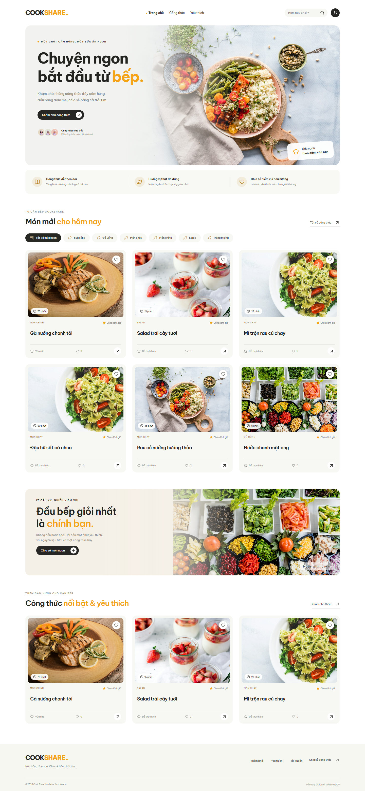
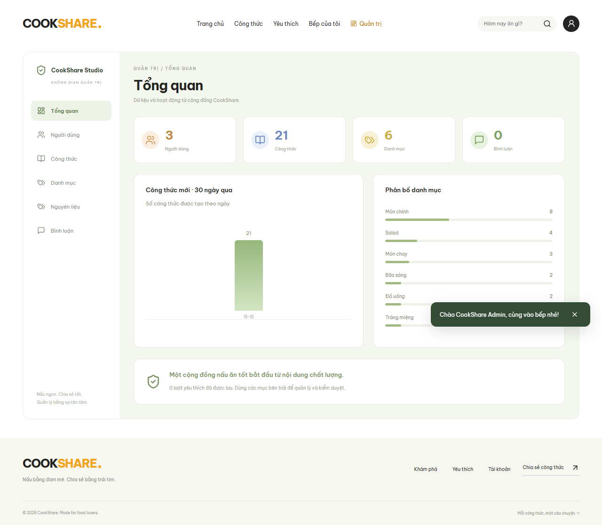
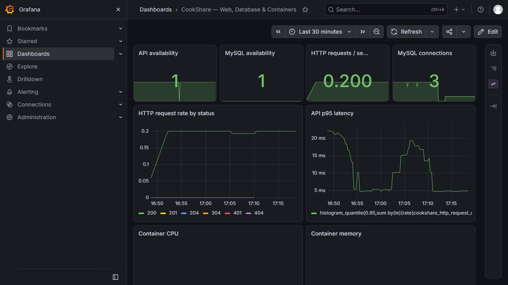

Website chia sẻ công thức nấu ăn
Sinh viên: [Điền họ và tên]
Mã sinh viên: [Điền mã sinh viên]
Lớp / giảng viên: [Điền thông tin]
Repository: github.com/DTC245200747/CookShare
Ngày kiểm tra: 15/10/2026
Cần điền thông tin cá nhân trước khi nộp. Báo cáo phân biệt rõ phần đã kiểm thử và phần chưa thể xác minh bằng Docker.
Repository được clone vào workspace CookShare. Giai đoạn 1 đã có schema sáu bảng, API CRUD và JWT; yêu cầu mở rộng bổ sung giao diện, cộng đồng, quản trị và DevOps. Các phần cốt lõi đang hoạt động được giữ lại và mở rộng.
| Hạng mục ban đầu | Cách xử lý |
|---|---|
| API CRUD và phân quyền | Giữ lại transaction/validation, mở rộng tính năng |
| Frontend chưa chạy | Hoàn thiện React, build và phục vụ tại gốc web |
| Chỉ một công thức mẫu | Seed 21 công thức, chạy lại không nhân đôi |
| Chưa có monitoring | Thêm Prometheus/Grafana/Loki/Alloy và smoke script |
Checklist ở docs/FEATURE_CHECKLIST.md chỉ dùng DONE cho phần đã kiểm thử thành công.
Frontend gồm pages, components, services và types. Backend chia routes/controllers/services/repositories/middleware/config. Migrations và seed tách khỏi mã HTTP. Docker frontend/backend có Dockerfile riêng.
Development: Express phục vụ frontend/dist hoặc Vite proxy API/upload. Docker: Nginx phục vụ React, chuyển tiếp API và upload qua network nội bộ. MySQL không mở port ra host.
Bản demo web đã chạy ở http://localhost:3000/. Cấu hình Docker đã kiểm tra nhưng chưa được chạy toàn bộ trên máy này vì daemon chưa hoạt động.
| Bảng | Vai trò |
|---|---|
| users, user_profiles, user_security | Tài khoản, hồ sơ, active và phiên token |
| categories, ingredients | Danh mục/nguồn nguyên liệu dùng chung |
| recipes | Tác giả, danh mục, mô tả, thời gian, khẩu phần |
| recipe_ingredients, recipe_steps | Định lượng và thứ tự thao tác |
| favorites, ratings | Khóa ghép user/recipe, chống bản tương tác trùng |
| comments | Nội dung, chủ bình luận và timestamps |
| recipe_moderation | Trạng thái published/hidden |
Ledger schema_migrations và GET_LOCK tránh chạy đồng thời. DDL dùng IF NOT EXISTS vì MySQL tự commit DDL. Seed transaction, bcrypt và tên công thức/tác giả để kiểm tra tồn tại; có 21 công thức tiếng Việt và 6 danh mục.

Ảnh chụp website chạy thật: banner, danh mục và thẻ công thức. Ảnh stock nằm trong source; nội dung công thức lấy từ API.
Kiểm thử trình duyệt tại 1440px, 820px và 390px kiểm tra ảnh tải được, không tràn ngang và các thao tác chính hoạt động.
Register chỉ nhận name/email/password, luôn tạo member. Bcrypt cost 12; password 10 ký tự tối thiểu, tối đa 72 byte UTF-8. JWT HS256 có issuer/audience và hết hạn sau một giờ. Mỗi request đọc lại role, active và token_version từ MySQL.
Logout, đổi mật khẩu, thay quyền hoặc khóa user vô hiệu hóa phiên cũ. Đổi mật khẩu yêu cầu mật khẩu hiện tại; không có flow đặt lại mật khẩu qua email trong phạm vi hiện tại.
| Chủ thể | Quyền |
|---|---|
| Public | Xem published recipe, taxonomy và bình luận |
| USER/member | Đăng recipe, sửa/xóa của mình, profile và tương tác |
| ADMIN | Quản lý user, taxonomy, mọi recipe/bình luận và moderation |

Dashboard lấy counts và chuỗi hoạt động từ truy vấn MySQL; không dùng số liệu minh họa hardcode.
Favorites idempotent theo khóa user/recipe; ratings upsert một bản ghi mỗi user/recipe; bình luận có owner check khi sửa/xóa. Điểm trung bình và số lượt thích tính từ dữ liệu thực.
Sidebar, thống kê user/recipe/category/comment, biểu đồ 30 ngày và phân bố danh mục. Admin quản lý quyền/active, kiểm duyệt hiển thị, CRUD taxonomy và xóa bình luận. Danh sách có tìm kiếm, lọc và phân trang.
Hidden recipe không xuất hiện trong API public; owner/admin có thể xem để chỉnh sửa. Admin không thể tự khóa hoặc tự hạ quyền chính mình. Mọi API admin kiểm tra quyền ở backend.
MySQL healthy → migration thành công → API ready → Nginx. Seed chạy rõ ràng bằng lệnh riêng để không reset mật khẩu hoặc seed lại mỗi khi API restart.
Backup MySQL và uploads; down không xóa volume. Public deployment cần TLS và thay secrets. Không có chứng nhận HTTPS hay triển khai public được tuyên bố trong báo cáo này.
Prometheus scrape API HTTP/process metrics và MySQL exporter; cấu hình Docker bổ sung cAdvisor. Grafana provision Prometheus/Loki và dashboard 11 panel. Alloy thu log JSON của ứng dụng và đẩy vào Loki.

{job="cookshare",service="api"}{job="cookshare",service="api"} | json | status >= 400sum(count_over_time({job="cookshare",service="api"}[5m]))
Đã xác minh bằng bản portable: Prometheus/API/MySQL exporter, Alloy đọc log file → Loki, Grafana datasource/dashboard. Docker log discovery và CPU/memory container chưa được xác minh vì Docker daemon chưa hoạt động; các panel container có thể chưa có dữ liệu trong bản portable.
| Nhóm | Kết quả |
|---|---|
| Build TypeScript backend/React frontend | Pass |
| Integration HTTP + MySQL | 21 tests, xem verification.md cho lượt chạy cuối |
| Browser nghiệp vụ/responsive | 3 kịch bản đầy đủ, screenshots thật |
| Grafana browser/datasources/dashboard | Kiểm tra riêng bằng Chrome và API |
| Migration/seed chạy lặp | Không nhân đôi, không reset mật khẩu cũ |
| Cấu hình Compose và monitoring | Kiểm tra cú pháp/config tools |
| Docker stack/cAdvisor/phpMyAdmin | Chưa xác minh runtime trên máy này |
Auth đúng/sai, owner/admin, transaction rollback, FK/cascade, profile, upload thật/giả/quá lớn, create-preview-edit-delete trên web, favorite/rating/comment CRUD, filters/pagination, dashboard/moderation và thu hồi token.
README.md; docs/api.md; docs/DEPLOYMENT.md; docs/verification.md; docs/FEATURE_CHECKLIST.md; screenshots; backend/frontend tests; hai workflow CI; scripts/verify-stack.mjs.
Thông tin sinh viên ở trang bìa cần được bổ sung. Sau khi có Docker daemon, chạy hướng dẫn DEPLOYMENT và smoke script để hoàn tất minh chứng container. Không đánh dấu DONE cho phần chưa kiểm chứng.